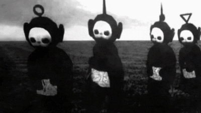
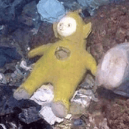
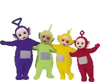
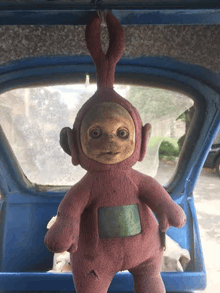
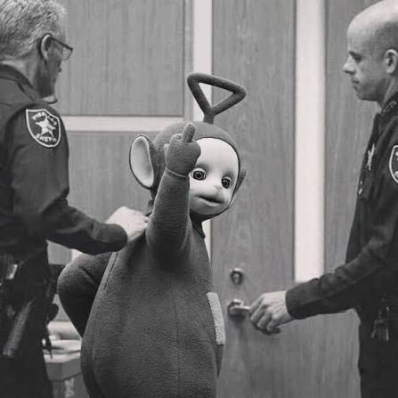
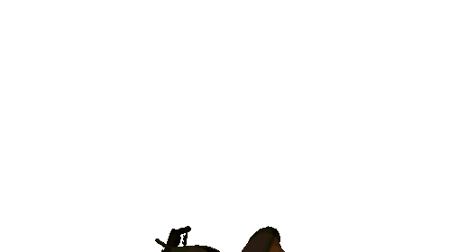
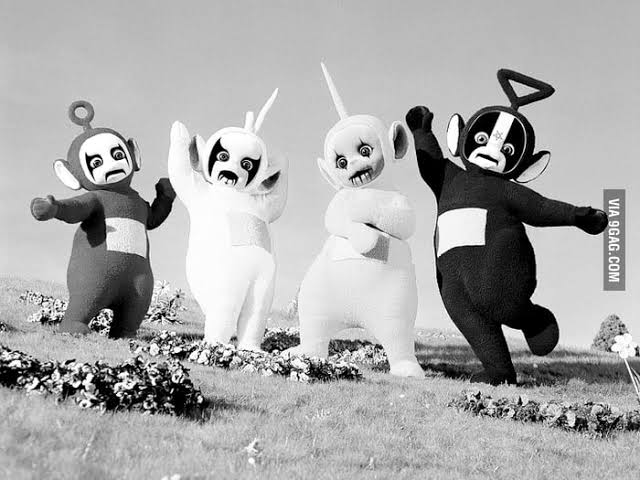
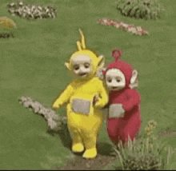
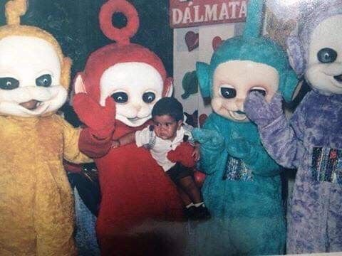

💻 LOS TELETURBIOS HAN VUELTO
27/09/2026 — 03:33 AMDespués de varios meses desaparecidos de Internet, los Teleturbios han vuelto a dejar su huella.
[ LEER MÁS ]EL BLOG MÁS TURBIO DE INTERNET

Nadie sabe quiénes somos.
Nadie sabe dónde estamos.
Y probablemente sea mejor así.



Después de varios meses desaparecidos de Internet, los Teleturbios han vuelto a dejar su huella.
[ LEER MÁS ]
Hemos encontrado información que podría revelar la identidad de uno de nuestros miembros...
[ LEER MÁS ]Una reflexión completamente innecesaria sobre el estado actual de Internet.
[ LEER MÁS ]> iniciando sistema...
> buscando conexión...
> conexión segura: NO
> usuario detectado: CURIOSO
> escribe help para ver los comandos
Internet no es un lugar.
Internet somos nosotros.
Y nosotros somos un problema.
💀NO CONFIAMOS EN NADIE💀


¿Tienes información? ¿Quieres contarnos un secreto?

Documentos recuperados. Empresas investigadas. Información que probablemente no deberías estar leyendo.
Documentos internos apuntan a una red de proveedores con condiciones laborales irregulares.
Una estructura de sociedades aparentemente independientes aparece conectada mediante movimientos financieros.
Diferencias entre los productos declarados y los registros internos de proveedores.
Contratos, jornadas y empresas intermediarias aparecen señalados en documentos internos.